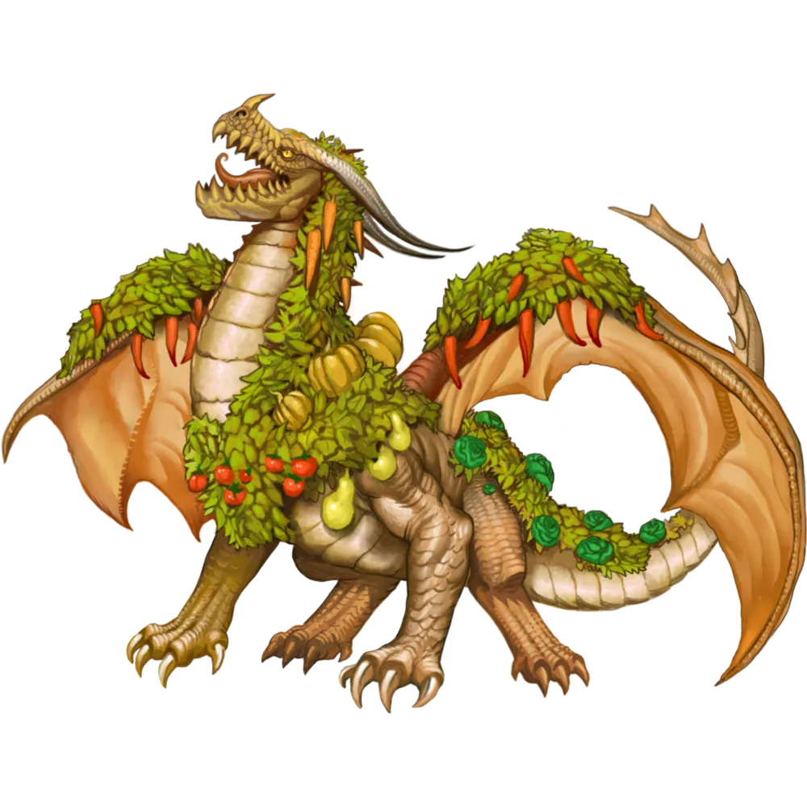
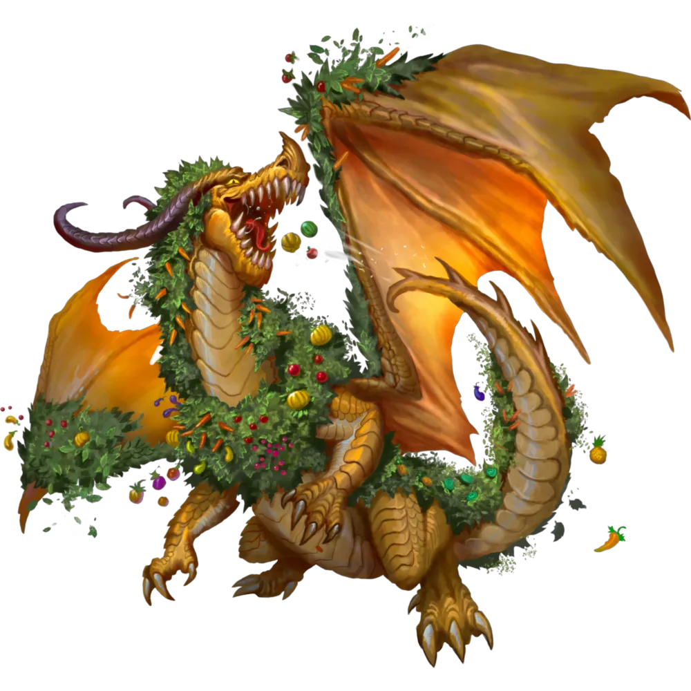

各年龄段数据卡
丰收龙是一类身披醒目的红、橙、黄三色鳞片，耳后生有细长树枝状龙角的莱希龙。它们躯干敦实健壮，宛如盛满成熟瓜果蔬菜的丰饶之角，四肢肌肉虬结，粗壮的长尾上覆满绚烂的秋叶。在所有龙族之中，丰收龙属于最通达世故、最喜爱交际的一支。因此，大多数丰收龙都会在大型巨龙村落辖境内的开阔田园庄园里与其他巨龙比邻而居；它们非但不会疏远同族或为争夺宝库而向其他巨龙发起挑战，反而乐于同大家携手共建家园。有时，它们甚至会定居在短寿族裔的聚落而非巨龙社群之中――尤其是当那些居民凭新奇独到的农耕园艺技术、饮食文化或节庆风俗勾起它们浓厚兴趣的时候。通常，这一切都始于某头丰收龙怀着好奇心悄悄探头张望村落，结果一下子被眼前的热闹景象迷住了心窍。 圣宴司礼卡芙萝妮西亚依偎在曲柳谷青山绿水之间的巨龙村落格威尔郡远近闻名，皆因这里是圣宴司礼卡芙萝妮西亚的家乡。身为所有丰收龙庆典策划师中最负盛名的泰斗之一，她每年春耕伊始都会在此举办传奇盛会“曲岸春分庆典”，而这场盛典的规模、声望与奢华程度似乎每一年都在再创新高。如今这场庆典已庞大到了惊人的地步，以至于卡芙萝妮西亚全年只有主持盛会的那一天才会迈出自家小屋，其余所有光阴都闭门不出，一门心思扑在来年的筹备规划之上。 在莱希龙当中，丰收龙素有“园艺大师”的美誉，且名副其实――除了打理田地之外，它们还会将最珍贵的作物直接栽种在自己的身躯之上。丰收龙对自家的园艺与农耕技法往往讲究到了吹毛求疵的地步，常会调配独门秘制肥料，或是培育世间绝无仅有的专属南瓜或浆果良种。种出硕大、鲜亮又健康的作物令丰收龙深感自豪，比邻而居的丰收龙还经常在每个收获季举办比赛，一较高下，看谁种出的葫芦瓜个头最大。获胜者通常除了吹嘘炫耀的资本外并无实质奖品，但在丰收龙社会里，单是这份荣耀便已千金难换。 尽管丰收龙天性喜爱清静、注重个人隐私，却偏偏对热闹派对爱得狂热；只不过比起容易被人一眼认出、处处受人瞩目的小型私密聚会，它们更偏爱人山人海的大型节庆盛会，好让自己隐入人群，做一名无人识破身份的狂欢客。在气候适宜的生态区里，巨龙社群中随处可见丰收龙出身的庆典司礼与专业活动策划师；一位庆典司礼往往会独自闭门数周之久，一丝不苟地敲定日程表、宴席菜单与场地布置，直到庆典当天方才破门而出，在克制有度却又盛大恢弘的狂欢热潮中彻底释放热情。 获月农忙得益于敏锐的夜视能力，丰收龙在收获时节能够比人类及其他入夜后便行动不便的族裔连续劳作更长的昼夜。因此在丰收之月里，丰收龙有时会连轴苦干，甚至顶着皎洁的获月通宵达旦地抢收庄稼。一旦农活大功告成，它们往往会一头栽倒、酣睡上好长一段日子――要么是在举办盛大丰收庆典之前先睡个够，要么是在狂欢落幕之后再补眠。一年之中规模最大的秋收通常在秋季，具体时节也会随地域与气候而有所差异；话虽如此，丰收龙在春、夏乃至寒冬时节也总能寻见可供采收的当季作物。每逢这些小型收获季，同样少不了一番辛勤劳作，紧接着便是一场欢庆节会与一觉漫长的酣眠，先后顺序则全凭心情。 只要有充裕的时间与事先了解，典型的丰收龙几乎总会将未来安排得明明白白、未雨绸缪，极少把事情留给侥幸与偶然。正因如此，它们向来抗拒说走就走的即兴出游与不请自来的突然拜访；一旦原定计划临时生变――尤其是当它们觉得变故毫无正当理由，或是纯粹源于旁人的自私任性时――它们便很容易大发雷霆。一头丰收龙为某场活动筹备的时间越充裕，待到盛会真正来临之际（只要一切都严格按照它的计划推进），它就越能无拘无束地尽情享乐。 可收获的宝库丰收龙的宝库里通常包含一片片奇异菜园与果圃，园中植株能以惊人的速度――往往只需短短一天――结出蕴含强大魔力的水果、蔬菜及其他可食作物。这类园圃可谓价值连城的宝藏，因为它们能稳定产出效果独特而奇妙的魔法消耗品。然而，贪婪的冒险者往往会懊恼地发现，这些魔法园圃既难以安全移植带走，更难寻得合适的买主脱手变现。为了将这笔横财的价值榨取到极致，他们或许不得不直接搬进被击败的丰收龙巢穴中长住――但这绝非易事：一来照料这些娇贵的魔法园圃本就极为棘手，二来鸠占鹊巢很可能让这头巨龙的盟友或家人顺藤摸瓜找上门来。说到底，与丰收龙交个朋友、共享它的宝库馈赠，往往比在战场上击败它要省心得多。 倘若一头丰收龙对培育完美作物或严守不打乱的作息表执迷太深，便有可能受此诱惑，走上隐士般的孤僻生活道路。在幽寂荒林或险峻崖畔的木屋里，这些巨龙只需对自己负责，得以分秒不差地维持绝对规律的日程。在丰收龙内部，这种对掌控欲的贪婪公认是一种危险的诱惑：独居固然能为丰收龙带来诸多好处，确保事事顺遂己意、臻至完美，但其代价之沉重，却是大多数丰收龙难以承受的。 “对饥长嚎”霍莫沃里纳克斯许多丰收龙要么深居在自己的一方小天地里，随心掌控生活的每一处细节；要么聚居在志同道合的盟友巨龙聚落之中。这种生活方式往往能让它们避开竞争对手、外界威胁以及屠龙者的不善觊觎。年少时的霍莫沃里纳克斯便是在这样的环境里长大的：多年以来，他一直过着优渥顺遂的日子，眼中所见唯有自己那个由挚友、家人、节庆与富足织就的舒适温室。然而步入成年后，他心中忽然萌生了外出闯荡的渴望；随着他迈出家门，那层温室泡沫轰然破碎，残酷的外界现实赤裸裸地展现在他眼前――外面的世界远不像他宁静故乡那般宛如田园牧歌。 他游走于尘世之间，心中交织着同等的着迷与不安、厌恶与好奇。目睹各族生灵彼此欺凌乃至自相残杀的景象，他虽悲痛万分，却又移不开视线，恰似旁观一场慢动作倾覆的马车惨剧。只因在温室庇护下生活得太久，他实在无法理解世上为何会有人蓄意犯下这等暴行。他就这样近乎失魂落魄地四处漂泊，直到踏入一座偏远山村。在那里目睹的惨状彻底击垮了他的理智，令他仰天发出了震耳欲聋的悲嚎。 明明在巨龙振翅不过数小时之遥（对人类而言固然需跋涉数日）的繁华城池里，达官显贵、富商豪绅们正推杯换盏、大摆筵席，这座乡野小村里的百姓却在活活挨饿。当霍莫沃里纳克斯看见几床薄毯底下盖着数具未能熬过饥荒的小小尸骸时，他心中的那根弦彻底崩断了。 丰收佳酿有些丰收龙会培育一种只生长在自己尾巴上的独特葡萄品种――萨帕里葡萄。它们用这种葡萄酿造“丰收佳酿”，成酒甘甜醇厚，还萦绕着一缕辛香浓郁的姜味。由于唯有丰收龙才能种出萨帕里葡萄，丰收佳酿在世间稀有到了极点，几乎只有腰缠万贯的名酒鉴赏家，以及有幸与一位丰收龙酿酒师结伴同行的幸运冒险者，方有机会一饱口福。 他怒不可遏地追问究竟发生了何事――尽管这头暴怒的巨龙起初只把村民们吓得魂飞魄散。待他拿出食物分予众人、好不容易安抚好村民的情绪听完原委后，他们哭诉的遭遇更是将他的怒火浇得直冲云霄：贪得无厌的领主强征了远超村落承受极限的重税，如今凛冬降临，无辜的村民们手头根本没有足以活命的余粮，只能眼睁睁在绝境中苦熬等死。 盛怒之下，霍莫沃里纳克斯振翅冲天而起，在模糊飞掠的数个时辰后杀回了那座城池。他在城中一举撞塌了领主宅邸的高墙，驱散卫兵，将搜刮来的不义粮草席卷一空。在恶狠狠地警告领主“下次再登门拜访时绝不会这般客气”之后，他将粮食尽数分发给了周边的贫困村落，同时重金聘请吟游诗人，将领主的暴虐恶行传唱至周边各处封地乃至王国王都。 岁月流转间，这桩事迹渐渐演变成了民间传奇；多年以后，霍莫沃里纳克斯在农夫百姓心目中化作了一尊神话般的守护者――他会向乖巧懂事的孩童分派食物与节庆欢欣，而对那些如传说中恶领主一般顽劣腐败的恶徒，则会降下雷霆般的暴烈惩戒。 至于那位领主本人，他曾妄图纠集军队去“讨伐那头无故袭击我城的狂暴恶龙”，不料征召来的农夫民兵当场倒戈抗命，昔日的盟友也纷纷袖手旁观、弃他于不顾。没过多久，他便被褫夺爵位，改由旁系支脉的一位亲族接掌领地，带领整片地区迈入了远胜往昔的繁荣岁月。 尽管自那以后已过去了数百年光阴，霍莫沃里纳克斯如今也已成长为一头太古龙，他却依然不知疲倦地翱翔于四方大地之上，搜寻着一切尚可防患于未然的天灾饥馑，以及一切亟待他出手推翻的不公饥荒。每当他撞见这等人间惨剧，数英里外便能听见他那震彻云霄的怒嚎。 “丰收恩泽”瑞亚设计者：罗恩与娜丁 太古丰收龙瑞亚的性情比大多数同族都要热情洋溢、开朗外向得多。她可不会只在一年一两度的庆典上露个面、其余时间闭门独处，而是把大半光阴都花在与世人分享丰收硕果、救治病患，以及为各式各样的大小喜事接连不断地举办派对与节庆之上。 她那座神奇的花园举世闻名――相传园中随时可能结出某种传说级的奇果、灵草或异花，既可充当治愈罕见绝症的主药，也能用来熬制开创性魔法研究所需的秘药。她栽种的魔法植株结出的果实蕴含着强大的神秘效力，而她则将其酿制成琳琅满目的魔药、灵液与疗伤良方。 除了培育结满蔬果的奇花异草之外，瑞亚还会收留并抚养失去双亲的动物幼崽与智慧生灵孤儿，悉心照料它们长大，直至它们具备独立谋生的能力。所有在瑞亚恩泽下长大的孩子都深深记得：她总是变着法子把大家喂得饱饱的，时刻挂念着每个人的胃口――哪怕明明已经吃了一整天丰盛大餐，她还是会慈爱地念叨孩子们到底吃饱了没有。莓果是这位雍容威严的太古龙最钟爱的美食，尤其是草莓与蓝莓；不过倘若有人妄图利用这一情报去贿赂她或左右她的裁断，劝你还是趁早打消这个念头为妙。 格威尔郡狂欢：圣宴司礼之座 Gwyrshire's Revelry: Seat of the Hierofestagogue鉴于格威尔郡村落与著名的“曲岸春分欢庆节”即便在遥远国度也声名远扬，我早有耳闻，便设法重新安排了行程，确保自己能在春播时节前夕亲临此地体验一番。 顺带一提，这也为我提供了一个绝佳契机，得以采访大名鼎鼎的圣宴司礼卡芙萝妮西亚――正是这位远古丰收龙一手创立了这场庆典，并年复一年地主持至今。 据传闻所言，卡芙萝妮西亚每年都会在自己的巢穴居所中闭门不出整整一年，专心筹划来年的庆典，唯有在临近布置筹备与正式主持庆典期间才会现身，待盛会落幕便又退居巢中，马不停蹄地投入下一年度的筹备工作。 果不其然，当我为参加欢庆节抵达当地时，她正带着近乎狂热的干劲四处奔忙……但遗憾的是，我发现她手头永远有忙不完的事务，从清晨到日暮，每一分钟的日程都排得满满当当。 所幸对我而言――恕我直言，对她自己亦是如此――她在日程中预留了几段简短的休息间隙。我有幸说服她准许我占用那点宝贵时间，进行了一场简短的对谈采访。尽管我倒希望她的回答能多谈些莱希龙的秘辛、少聊些派对筹办的心得，但我依然认为这次访谈与这场盛会都堪称圆满成功！ ――永光贤者卡利赞德雷克斯 |
 丰收龙  丰收龙 |